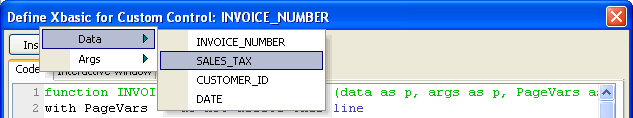
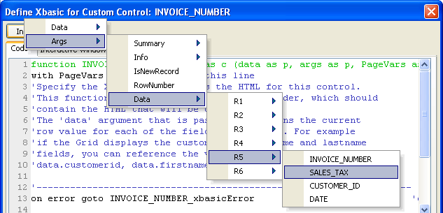
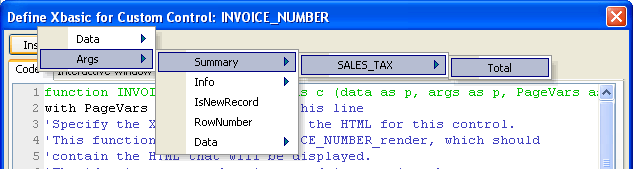
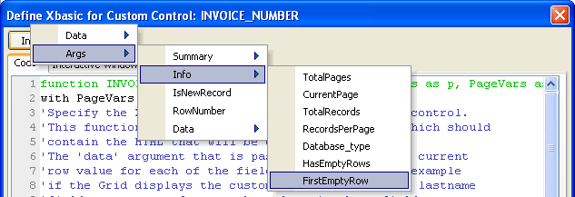
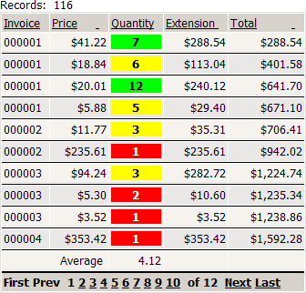

Creating a Custom Grid Control
A custom control allows you to fully define the content of a grid cell. The content is produced by a function that typically processes a combination of Xbasic and HTML code. Other than the requirement that the function return valid HTML, there are no other important constraints upon what the grid cell can display.
 Note : Custom controls
cannot be used for data entry to bound table fields.
Note : Custom controls
cannot be used for data entry to bound table fields.
To create a custom control:
Display the Grid Fields page of the Grid Builder.
Select the control that you want to modify in the Selected Fields list.
Change its Display Settings > Control Type to "Custom".
Click the
 button in the Custom Control Properties
> Definition field to display the Define
Xbasic for Custom Control dialog. This dialog allows you to define
the code that produces the return value of a function. The function is
named fieldname_render(), where fieldname
is the name of your field.
button in the Custom Control Properties
> Definition field to display the Define
Xbasic for Custom Control dialog. This dialog allows you to define
the code that produces the return value of a function. The function is
named fieldname_render(), where fieldname
is the name of your field.
 The function will return a value that is composed of quoted HTML and unquoted Xbasic.
The function will return a value that is composed of quoted HTML and unquoted Xbasic.
You may dimension local variables of any type within the fieldname_render() function. However, if you want to create variables that have scope beyond the current grid cell, you must define it as an element of either the:
args pointer (valid for the grid page)
session pointer (valid for the session)
For example, this code is able to create a running total of the Extension field by adding values to session.rt.
|
if eval_valid(" session.rt") = .f. then session.rt = Data.EXTENSION else session.rt = session.rt + Data.EXTENSION end if |
At any time you can insert the value of any of the fields in the current row into the code by clicking Insert > Data > FieldName.

At any time you can insert the value of any of the fields on any of the rows of the current grid page by clicking Insert > Args > Data > RowNumber > FieldName.

If the grid has any summary fields, then you can insert any of them by clicking Insert > Args > Summary > FieldName > SummaryType.

The Define Xbasic for Custom Control dialog provides several system variables that you can use in your calculations.
|
Name |
Type |
Description |
| Args.Info.TotalPages |
N |
The number of grid pages required to display all records. |
| Args.Info.CurrentPage |
N |
The current grid page. |
| Args.Info.TotalRecords |
N |
The number of records returned by the current table query. |
| Args.Info.RecordsPerPage |
N |
The maximum number of records to display in a grid page. |
| Args.Info.Database_type |
C |
The type of database. |
| Args.Info.HasEmptyRows |
L |
Does the current grid page have an empty row? |
| Args.FirstEmptyRow |
N |
The row number of the first empty row. |
| Args.IsNewRecord |
L |
Are you processing a newly input record? |
| Args.RowNumber |
N |
The current row number. |
| Args.Summary |
P |
The values of various summary calculations. |

A custom control where Xbasic dynamically sets font and background properties, depending on whether the quantity value is above or below the average.

In the following example, the field name is Quantity. as a result, the function is named Quantity_Render().
|
function QUANTITY_render as c (data as p, args as p, session as p) on error goto xbasicError if data.quantity < (.5 * args.summary.quantity.average) then QUANTITY_render = <<%html% %html%
+ data.quantity + " "
else if data.quantity > (1.5 * args.summary.quantity.average) then QUANTITY_render = <<%html% %html%
+ data.quantity + " "
else QUANTITY_render = <<%html% %html%
+ data.quantity + " "
end if end if end xbasicError: QUANTITY_render = "Error in custom control xbasic: " + error_text_get() end function |
In this second example, the field is named ext2. It uses a session variable named session.rt to accumulate a running total.
|
function ext2_render as c (data as p, args as p, session as p) on error goto ext2_xbasicError if eval_valid("session.rt") = .f. then session.rt = Data.EXTENSION else session.rt = session.rt + Data.EXTENSION end if html = " "
+ alltrim(str(session.rt, 250, 2, "$(") ) + " "
ext2_render = html end ext2_xbasicError: ext2_render = "Error in custom control xbasic: " + error_text_get() end function |
In this examples, the if and else clauses have similar content. Both are character strings that combine HTML coding and a reference to the quantity field, using the prefix " data. ".
Although not a required technique, embedding the HTML inside the Using
a Custom Control on an Updateable Grid If you place a custom control on a grid with editable controls, the
function that creates the custom control must exit if you are creating
a new record. You would have something like this at the top of the function. function MYFIELD_render as c (data as p,
args as p, PageVars as p) with
PageVars on
error goto MYFIELD_xbasicError if
Args.IsNewRecord = .t. then exit
function end
if ... continue with HTML definition See Also Setting Grid Control Properties Limitations Web publishing applications only; not for Ajax grids.